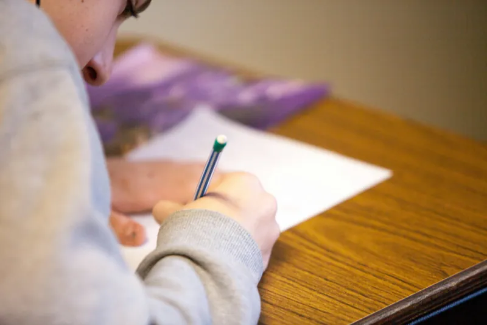

Domina el DOMINA
Guía práctica para entender y aprobar el examen DOMINA-BACH Avanzado
Datos del equipo
- Equipo: Los Sustentantes
- Líder del proyecto: Dylan David Herrera Sánchez
-
Integrantes y sección a su cargo:
- Dylan David Herrera Sánchez: Portada
- Antonio Israel Barragán Avilés: Conoce el examen DOMINA
- Joseph Domínguez Manzo: Contenidos del examen
- Erick Emiliano Gómez Aguilar: Guía práctica para aprobarlo
- Brayan Bart Romero Rosas: Recomendaciones previas al examen
- Jesús Antonio Tovar Ledesma: Conclusiones
- Ángel Ricardo Velázquez Espino: Referencias
- Grupo: 5°A
- Materia: Fortalecimiento de Habilidades Académicas I
- Profesor: Mtro. José Luis González Pensamiento
- Universidad del Valle de México, campus Coyoacán
- Periodo Otoño 2026

¿Por qué diagnosticar nuestras habilidades académicas?
Un examen diagnóstico no sirve para reprobar a nadie, sirve para saber dónde estamos parados. Cuando conocemos qué temas dominamos y en cuáles fallamos, podemos estudiar con un objetivo claro en lugar de repasar todo al azar.
La evaluación funciona mejor cuando sus resultados se usan para mejorar. Black y Wiliam (1998) revisaron decenas de estudios y encontraron que la retroalimentación que recibe el estudiante sobre su desempeño es una de las formas más efectivas de elevar el aprendizaje. El DOMINA hace justo eso: le da a cada alumno y a su escuela un reporte por área que muestra fortalezas y puntos débiles antes de entrar a la universidad (Centro Nacional de Evaluación para la Educación Superior [Ceneval], 2023).
En este sitio vas a encontrar cómo está armado el examen, qué contenidos evalúa, ejemplos de reactivos y estrategias respaldadas por investigación para prepararte.